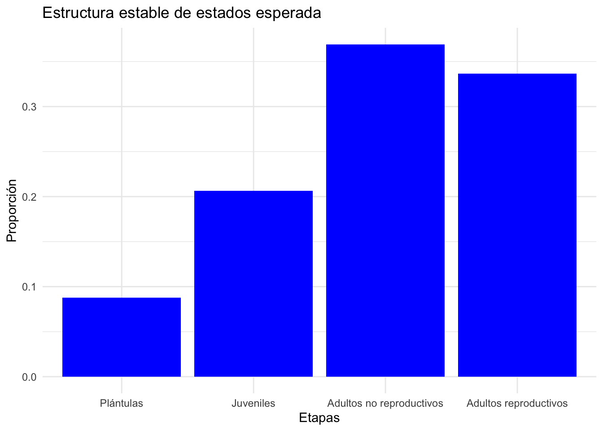

Capítulo 10 Estimación de Parametros
10.3 Librerías de R requeridas para el análisis
#Capturar los datos de la matriz para L. rubripetala (Tremblay et al. 2015)
Lr1 <- matrix(c(0.4324, 0, 0, 0.15,
0.3784, 0.8459, 0, 0,
0, 0.0034, 0.7954,0.2300,
0, 0.0890, 0.1841,0.7510), byrow=TRUE,ncol=4)
#Capturar las categorias de estado
estadios <- c("PL", "J", "NR", "AR")
colnames(Lr1) <- rownames(Lr1) <- estadios
#Obtener la matriz L. rubripetala
Lr1 <- matrix(Lr1[1:4, ], nrow = 4, dimnames = list(estadios, estadios))
Lr1## PL J NR AR
## PL 0.4324 0.0000 0.0000 0.150
## J 0.3784 0.8459 0.0000 0.000
## NR 0.0000 0.0034 0.7954 0.230
## AR 0.0000 0.0890 0.1841 0.751Paso 2: Comprobar que se cumplan los supuestos de la matriz de estudio.
Previo al análisis de dinámica transitoria se debe comprobar que la matriz de transición poblacional sea: a) Cuadrada, que tiene igual número de filas que de columnas, b) No negativa, que todos sus elementos son positivos, por lo que son iguales o mayores a 0.000; c) Ergódica, que el crecimiento asintótico es independiente de la estructura poblacional al inicio del estudio; d) Irreducible, que los elementos de la matriz de análisis y, por lo tanto, los nodos de la gráfica del ciclo de vida, estén fuertemente conectados, tengan una ruta y desde cualquiera de las etapas pueda llegar a todas las otras formando un ciclo; e) Primitiva, que el resultado de elevar a altas potencias una matriz irreducible positiva (i.e. sin elementos negativos) único y tenga un sólo valor positivo (i.e. tasa de crecimiento poblacional). Para más información sobre estas condiciones revisar: (Stott et al. 2010).
Para evaluar si la matriz es cuadrada, no negativa, ergódica, primitiva e irreducible se usan las siguientes funciones de R: dim, isErgodic, isPrimitive y isIrreducible respectivamente. A través del comando positiv se determinó si todos los elementos de la matriz son positivos, por lo tanto, iguales o mayores a 0.000. A continuación se comprueba si la matriz de L. rubripetala cumple con estas condiciones o supuestos.
10.4 PASO 2: CONDICIONES QUE DEBE CUMPLIR LA MATRIZ DE ESTUDIO
# a) Dimensión de la matriz (filas x columnas): los valores deben ser iguales
dimension <- dim(Lr1)
# b) No negativa
positiv <- all(Lr1 >= 0)
# c) Ergódica
ergodica <- isErgodic(Lr1, digits=5, return.eigvec=FALSE)
# d) Irreducible
irreducible <- isIrreducible(Lr1)
# e) Primitiva
primitiva <- isPrimitive(Lr1)Paso 2a. Comprobación de los supuestos para las matrices de estudio. En el siguiente cuadro se presentan los resultados que comprueban que la matriz de L. rubripetala cumple con los supuestos establecidos para el análisis. Se comprueba que la matriz es cuadrada al tener 4 renglones y 4 columnas; asimismo, cumple con ser no negativa, ergódica, irreducible y primitiva al ser “TRUE” el resultado en los cuatro casos.
## [1] 4 4## [1] TRUE## [1] TRUE## [1] TRUE## [1] TRUEPaso 3: Análisis demográfico básico.
En el análisis de dinámica transitoria necesitamos conocer cómo se comporta una población en el largo plazo, por lo que se proyecta el crecimiento poblacional de tipo asintótico para la matriz de la población seleccionada. Entonces, a partir de la matriz de proyección poblacional y el correspondiente vector de la estructura poblacional observada al inicio del estudio de L. rubripetala, calcularemos la tasa de crecimiento poblacional (i.e.lambda, de ahora en adelante lambda-max), la estructura poblacional estable (w, de ahora en adelante w-max) y el valor reproductivo (v), así como las matrices de sensibilidad y elasticidad. Con este fin, usaremos el procedimiento de la Sección X, desarrollado en el programa popbio de R.
10.4.1 Analisis de convergencia y “Damping Ratio”
Además de esta información se estimarán dos nuevos indices: el tiempo de convergencia (convergence-time) y el índice de amortiguamiento (damping-ratio). El primero indica el tiempo esperado en que una población alcanza la estructura estable de una población con un crecimiento asimtótico, mientras que el segundo es una medida de que tan rápido (ciclos en tiempo de la matriz; meses, años) para que converge una población a la estructura estable (Caswell, 2001). Ese ultimo se calula dividiendo el valor propio dominante (el eigenvalue) con el segundo valor dominante (la parte real), por consecuencia es una medida de cuan rápido la población regresa a su estructura poblacional estable despues de un disturbio, más grande el indice de damping ratio más rapido converge a la estructura estable (Stott, Townley, and Hodgson (2011)). Nota que el damping ratio es un indice sin unidades y es independiente de la estructura original de la población (el vector de tamaño de muestra de cada etapa).
Los siguientes indices son una medida basado en el tiempo de las transiciones si bien, la mayoría de los datos de los estudios poblacionales han sido colectados para un periodo de tiempo anual (Crone et al. 2011), es importante recordar que algunos han sido colectados mensual, bimensulamente, por estación o de forma bianual, dependiendo del ciclo de vida de la especie de estudio. En el caso de L. rubripetala los datos fueron colectados mensualmente, debido a la producción constante de estructuras reproductivas a lo largo del año (R. L. Tremblay, Raventos, and Ackerman 2015).
– PASO 3: ANÁLISIS DEMOGRÁFICO BÁSICO: PROYECCIÓN DE LA POBLACIÓN –
10.5 Análisis asintótico (i.e. largo plazo) del crecimiento poblacional de L. rubripetala.
# PARÁMETROS POBLACIONALES
# Tasa de crecimiento poblacional
lambda <- lambda(Lr1)
# Estructura estable de estados
Wmax <- stable.stage(Lr1)
# Valor reproductivo
v <- reproductive.value(Lr1) # Este no se habla en el texto
# Matriz de elasticidad
elasticidad <- round(elas(Lr1), digit = 3)
# Relación de amortiguamiento
dampingratio <- dr(Lr1, return.time = TRUE, x = 10)
# Tiempo de convergencia
n0 <- c(0, 46, 38, 82) # la esturctura de la población inicial
tconvergencia <- convt(Lr1, accuracy = 1e-3, vector = n0)10.6 Estructura estable
La estructura estable de edades/etapas es un indice de la distribución proporcional de la poblacional que se espera que esta población alcance en el largo plazo. En el caso de Lepanthes rubripetala se espera que la población alcance una estructura estable de 0.088, 0.206, 0.369 y 0.337 para las categorías de plántulas, juveniles, adultos no reproductivos y adultos reproductivos, respectivamente. Esta estructura asume que el crecimiento poblacional lambda \(\lambda\) sigue igual y constante en el tiempo. Para una especie alcancar una estructura estable, el ambiente debería ser constante y sin cambios, lo cual es raramente el caso en la naturaleza. Esto asume que el periodo de muestreo y las condiciones abiotica y bioticas son tipica y constante. En un analisis de revisión de literatura Williams et al (Williams et al. (2011)) encontraron que más del 80% de las poblaciones no cumplia con la condición de estructura estable. En adición observarón que mayor desviación se obervaba en poblaciones con tiempo de generación largas y matriz grandes (n x n).
## PL J NR AR
## 0.08789851 0.20619682 0.36907404 0.33683063Uno puede visualizar la estructura la estructura de la población usando el codigo siguiente.
Wdf=data.frame(Wmax)
Wdf$Categorias=c("Plántulas","Juveniles","Adultos no reproductivos","Adultos reproductivos")
Wdf$Categorias=factor(Wdf$Categorias, levels=c("Plántulas","Juveniles","Adultos no reproductivos","Adultos reproductivos"))
library(ggplot2)
ggplot(Wdf, aes(y=Wmax, x=Categorias)) +
geom_bar(stat="identity", fill="blue") +
labs(title="Estructura estable de estados esperada", x="Etapas", y="Proporción") +
theme_minimal()
10.7 Análisis de Amortiguamiento/Damping Ratio
El análisis de amortiguamiento es un indice de la rapidez con la que una población converge a su estructura estable después de un disturbio (Jiang et al. 2020). El indice de amortiguamiento \(d > 0\), y más grande el indice de amortiguamiento más rápido la población converge a la estructura estable. Se ha demostrado que hay una relación entre el indice de amortiguamiento y tiempo de generación de una especie (Jiang et al. 2020). El tiempo de amortiguamiento se calcula \(\tau=1/d\). Usando la función dr del paquete popbio, en el caso de Lepanthes rubripetala se espera estima que el indice de amortigamiento es 1.2 y que la población converga a su estructura estable en 12 meses, ya que los datos fueron recolectado y analizado mensualmente. Si los datos hubiese sido recolectado una vez al año entonces la población converga a su estructura estable en 12 años. Un supuesto importante es que la tasa de crecimiento intrínseca es igual para todos los periodos subsiguientes.
## $dr
## [1] 1.210702
##
## $t
## [1] 12.0427810.8 Análisis de Convergencia
El tiempo de convergencia puede ser calculado a base de la cantidad de individuos en las diferentes etapas o edades. El tiempo de convergencia es el tiempo esperado en que una población alcanza la estructura estable. En el caso de Lepanthes rubripetala se espera que la población alcance la estructura estable en 25 meses si se comienza con una población sesgada de solamente plántulas (n=1000) y ninguno en las etapas subsiguientes.
# Tiempo de convergencia
n = c(1000, 0, 0, 0)
tconvergencia <- convt(Lr1, accuracy = 1e-3, vector = n)
tconvergencia## [1] 25Si comenzamos con una población mucho más cerca a la estructura estable, podemos calcular el tiempo de convergencia. Digamos que se comienza con una población de 8, 20, 27 34 individuos en las etapas plantulas, juveniles, adultos no reproductivos y adultos reproductivos, respectivamente. En este caso se espera que la población alcance la estructura estable en 6 meses. En este caso vemos que el tiempo de convergencia es mucho más corto que si se comienza con una población sesgada de solamente plántulas. Es acercamiento puede ser util cuando se hace trabajo de conservación, por ejemplo se establece una nueva población con x cantidades de individuos en cada etapa.
## [1] 610.9 Valores reproductivos
El valor reproductivo v es un indice de la contribución de cada categoría de edad/estado a la tasa de crecimiento poblacional. En el caso de Lepanthes rubripetala se espera que la categoría de adultos reproductivos contribuya más a la tasa de crecimiento poblacional, seguido por la categoría de adultos no reproductivos, juveniles y plántulas. Los valores en la lista de v se compara con la primera edad/estado y siempre la primera etapa/estado tiene un valor de 1.000. Por consecuencia un individuo de la 4ta etapa (adulto reproductivo) tiene un potencial de dejar 2.7 individuos al comparar que una plantula tiene solamente tiene un valor de 1.0. La diferencia es que los individuos pequeños tienen que sobrevivir y llegar a las etapas mayores para contribuir a la tasa de crecimiento poblacional.
## PL J NR AR
## 1.000000 1.519043 2.316113 2.664676